<%=m_client_name_s%>의 특별함
<%=m_client_en%>
더 나은 치과진료를 위해
연구하고 공부하는 <%=m_client_name%>입니다
<%=m_client_name%>를
신뢰할 수 있는 이유
특별함 01
보건복지부 인증,
치과 전문의 진료
치과진료는 잇몸뼈 속 수많은 혈관과 신경, 주변 치아까지 고려한 철저한 수술계획과 노하우로 안전하게 진행해야 합니다.
간단한 식립부터 고난이도 수술까지 다양한 케이스의 수술 경험을 보유한 전문 의료진이 직접 진료합니다.
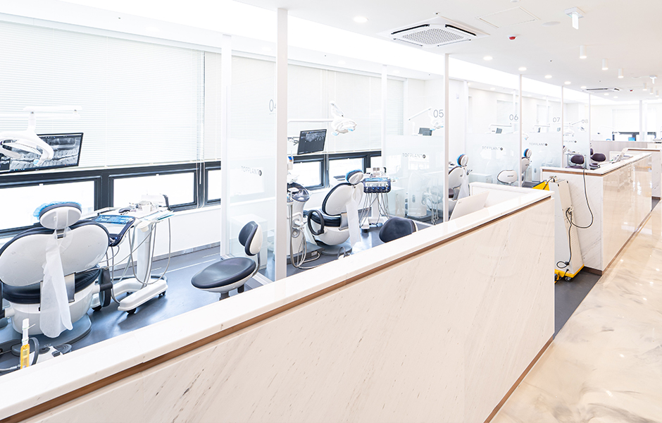
특별함 02
오차없는 진단을
위한 첨단의료장비
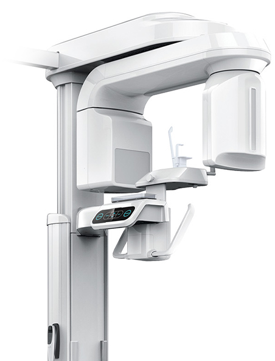
3D CT 촬영으로 치아와 치조골의 상태 및
잇몸뼈의 양과 길이 등의 상태를 정확하게
측정하여 세밀한 진단과 시술 전 발생가능한
문제점을 사전에 발견하고 대비하여
진료의 안정성을 높힙니다.
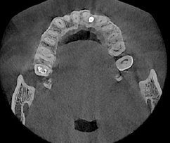
-
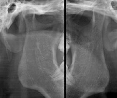
-
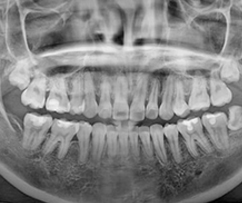
-
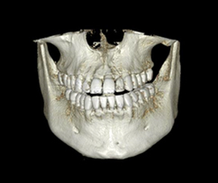
특별함 03
더 정확하고 더 편안한
디지털 치과진료
치과진료는 굉장히 세밀한 치료이기 때문에 정밀한 3D 디지털 기술을 접목하면
의료진의 판단에만 의존하던 치료를 더욱 정확하게 예측하고 진하여 오차를 줄일 수 있습니다.

특별함 04
자연치아 보존원칙
아무리 좋은 치과 치료법도 자연치아만큼의 역할과 기능은 하지 못합니다.
<%=m_client_name%>는 환자의 구강상태를 보다 면밀히 확인하여 자연치아를 살리는 방법을 최우선으로 하는 치료를 우선합니다.
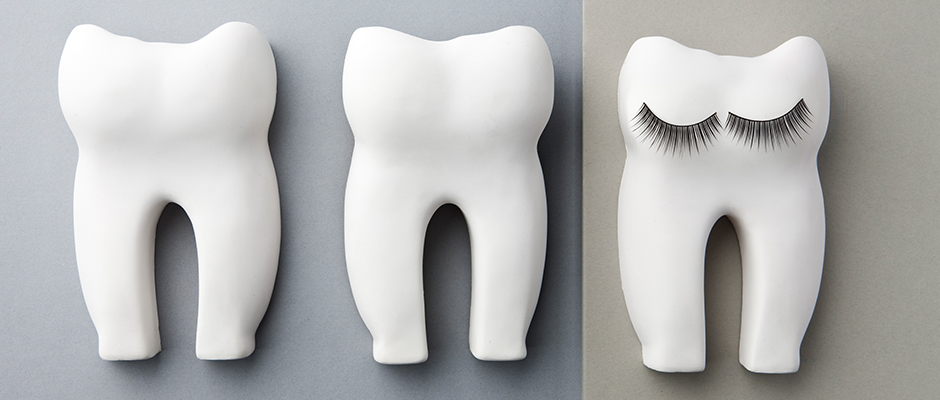
특별함 05
3단계 무통 마취 시스템
마취를 해서 통증을 없앤다고 하여도 마취 주사 자체도 두려워 하시는 분들이 많습니다.
<%=m_client_name%>는 마취 주사 마저도 아프지 않게 해 드리기 위해 3단계 무통 시스템으로 환자분들의 불안과 통증을 해소해 드리고 있습니다.
-
1
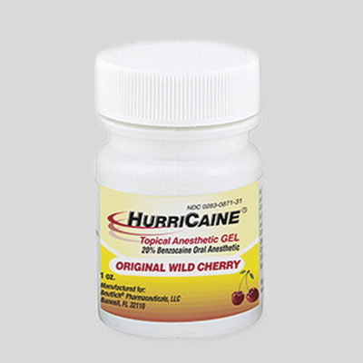
-
2
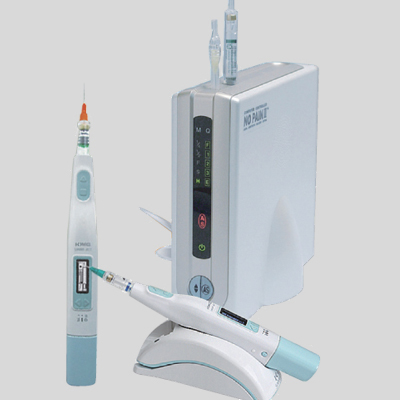
2단계 : 무통 마취기(디지털 마취)
-
3
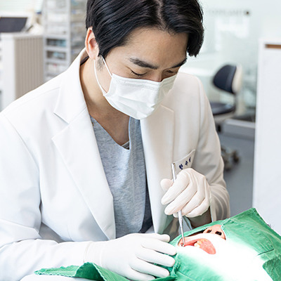
3단계 : 의료진 마취
특별함 06
철저한 사후관리
소중한 치아를 건강하게 오랫동안 유지할 수 있도록
<%=m_client_name%>는 치료가 끝난 후에도 철저한 사후관리로 건강한 치아를 더욱 오래 쓸 수 있도록 도와드리고 있습니다.
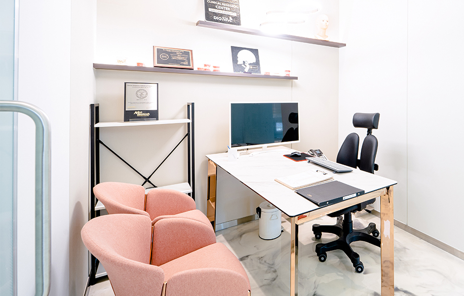
특별함 07
위생적인 멸균,소독
치과에서 사용되는 기구들은 환자분의 혈액과 체액이 직접 닿는 만큼
환자와 환자 사이에 발생할 수 있는 2차 감염을 방지하기 위해
위생관리 전담 인력 배치 및 철저한 감염관리 규정을 준수하고 있습니다.
-
사용한 기구 수거 및 분리
-
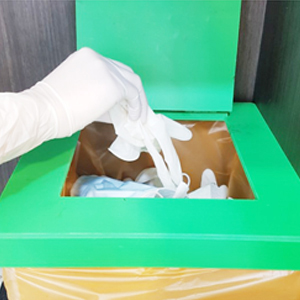
사용한 기구 폐기
-
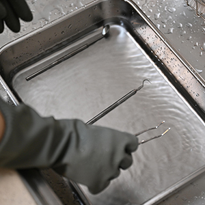
1차 세척
-
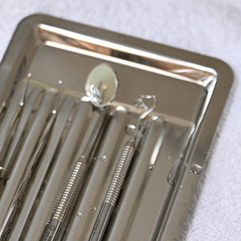
1차 소독
-
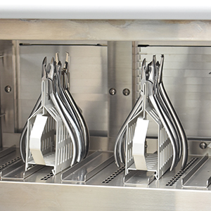
사용기구 건열소독
-
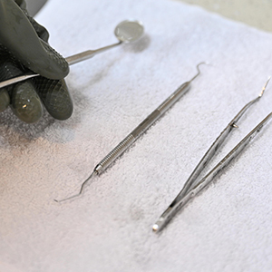
세척한 기구 건조
-
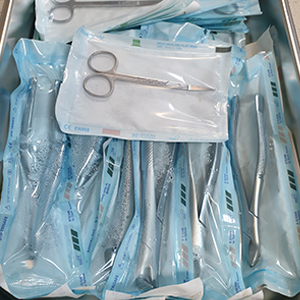
멸균 패킹
-
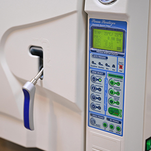
고온 고압 증기 멸균
-
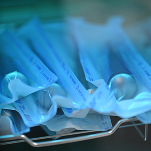
자외선 소독기 보관
-
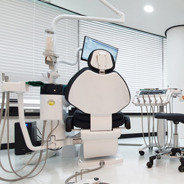
체어 및 타구대 소독
특별함 08
특허받은 치과
<%=m_client_name%>는 환자분께 편안하고 아프지 않은 치료, 수준 높은 진료를 위해 끊임없이 노력하고 연구합니다.
그 결과로, "치과용 봉합 밴드" 특허를 받았습니다.
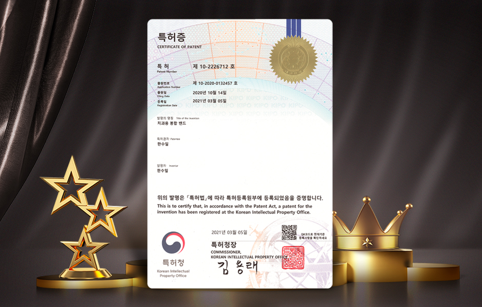